ILLUSTRATIONS
生成イラストギャラリー
note記事のヘッダーやこのサイトのメインビジュアルに使ってきた、AI生成イラストをまとめています。すべて実際に公開・使用したものです。
構図・雰囲気を記事の内容に合わせて指示を出し、Microsoft 365 CopilotやChatGPTなど複数のツールを使い分けながら、試行錯誤して仕上げています。

サイトのメインビジュアル
このポートフォリオサイトのヒーロー画像・プロフィールアイコンに使用。「コードも書くし、文章も書く」という自己紹介を、少年とロボットの組み合わせで表現。
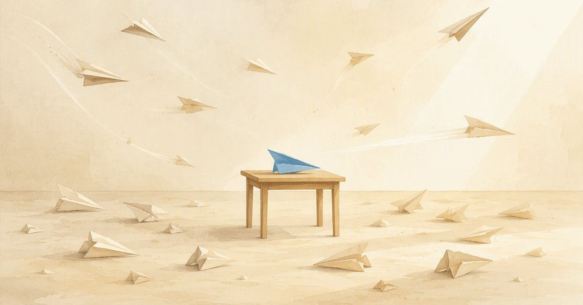
本業を持ちながら副業ライティングに20件近く挑戦してみた【前編】
応募した案件の数だけ散らばる紙飛行機の中、1機だけ飛び立とうとしている様子で「挑戦の数」を表現。
記事を読む »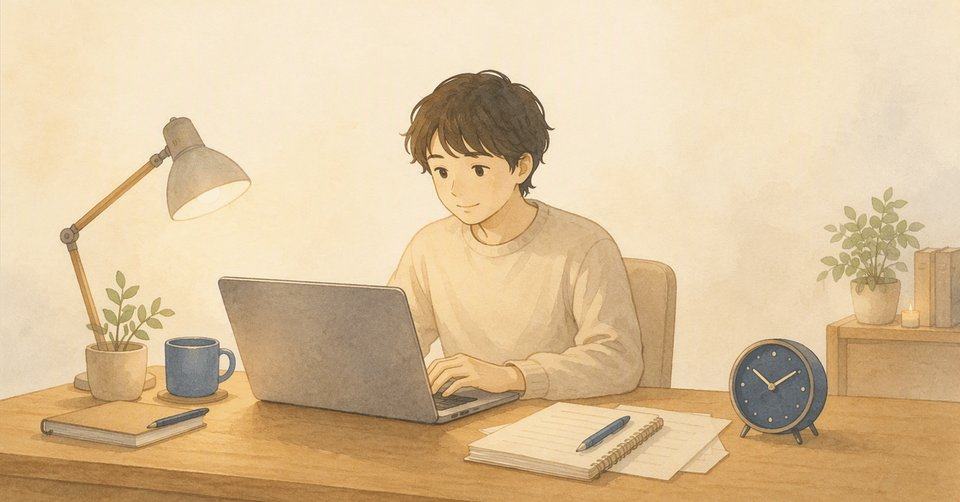
本業を持ちながら副業ライティングに20件近く挑戦してみた【後編】
前編と対になる構図で、地に足をつけて淡々と作業に向かう姿を描いた。
記事を読む »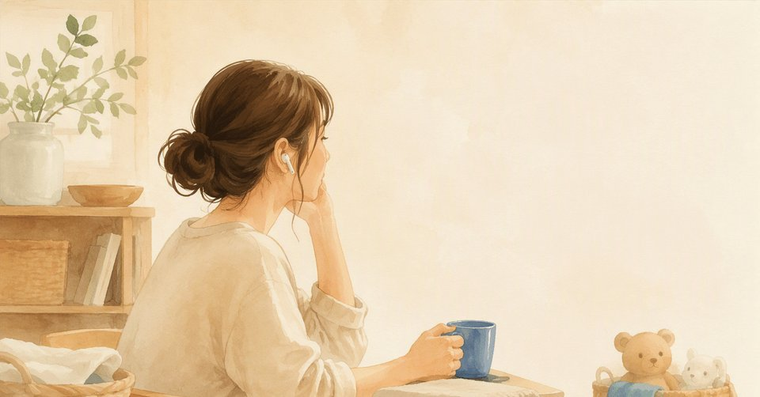
育児で時間を奪われ、オーディオブックで「学ぶ理由」を見つけた話
家事の合間にイヤホンで耳から学ぶ、というエッセイの主題をそのまま情景として描いた。
記事を読む »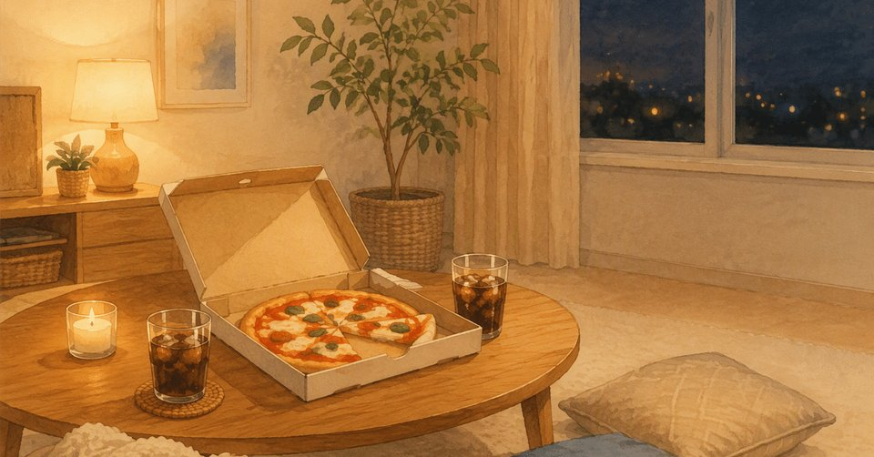
今週、ちゃんと頑張りすぎていた
頑張った週の終わりに、自分をねぎらう夜の時間を、あたたかい部屋の情景で表現。
記事を読む »自己紹介とポートフォリオ
サイトのメインビジュアルと同じ「少年とロボット」の世界観を、記事用に構図違いで制作。
記事を読む »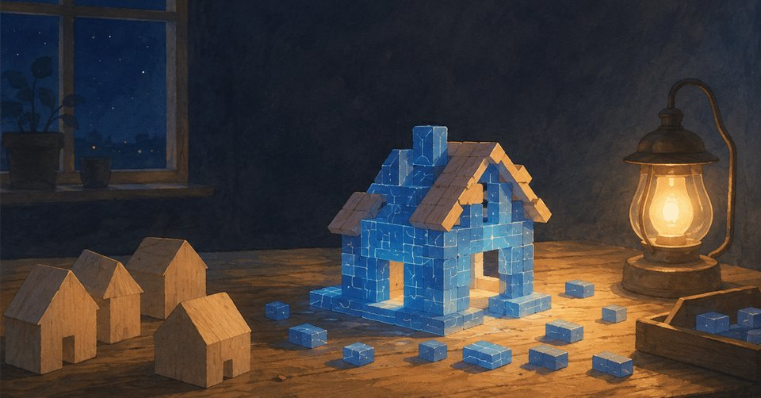
ノーコードを使わずAIとポートフォリオサイトを作った話【前編】
既製の小さな家々(ノーコードツール)の中で、1つだけ手作りで家を組み上げていく様子を制作過程になぞらえた。
記事を読む »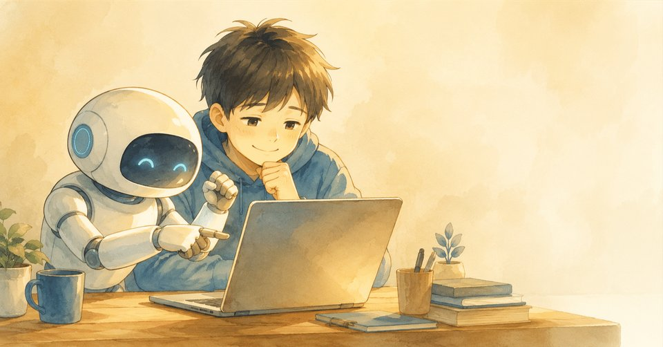
ポートフォリオサイトをAI7つの役割分担で作った手順とプロンプト
有料記事設計図・道具箱を並べた作業台の構図で、複数のAIを役割分担しながら1つのサイトを組み上げていく制作過程を表現。
記事を読む »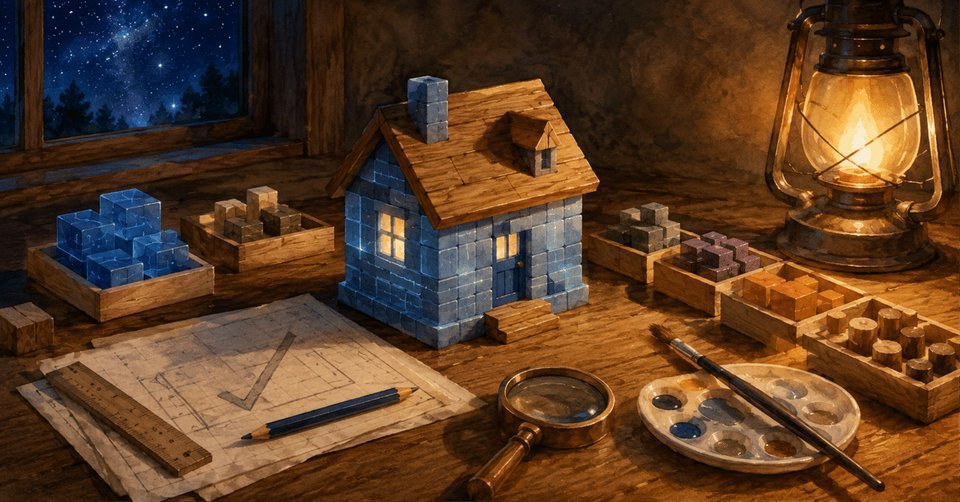
ノーコードを使わずAIとポートフォリオサイトを作った話【後編】
前編で組み立てていた家に明かりが灯り完成した情景で、サイトの完成を表現。
記事を読む »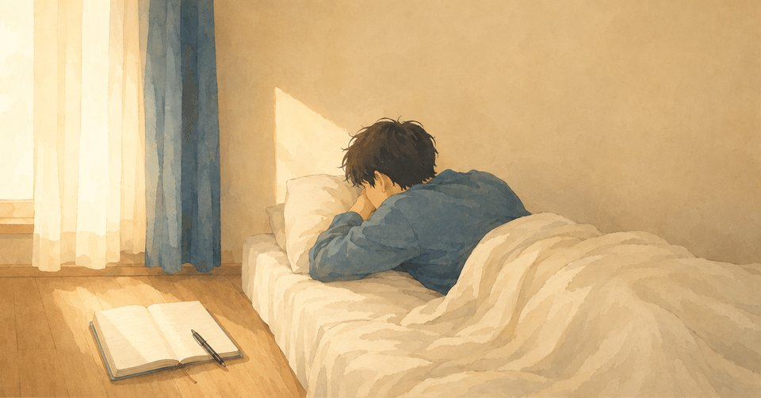
副業の収入がまだ0円。休日に3時間寝てしまった僕の罪悪感
床に置いたままのノートと、ベッドに沈み込む姿で、休んだことへの罪悪感を情景として表現。
記事を読む »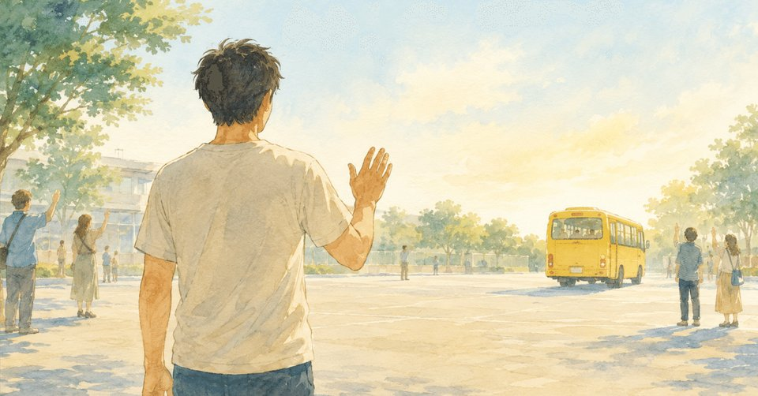
初めてのお泊まり保育、親のほうが不安だった話
子どもを乗せたバスを見送る後ろ姿で、「不安だったのは親の方」という記事の視点を表現。
記事を読む »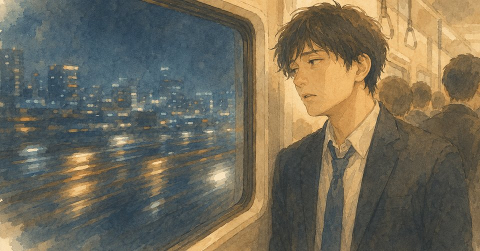
リーマンショック世代の新卒がIT企業で疲れ果て、美容師を選ぶまで
新卒時代を振り返る自分史シリーズ第一弾。満員電車の中で外の夜景を見つめる姿で、当時の閉塞感を表現。
記事を読む »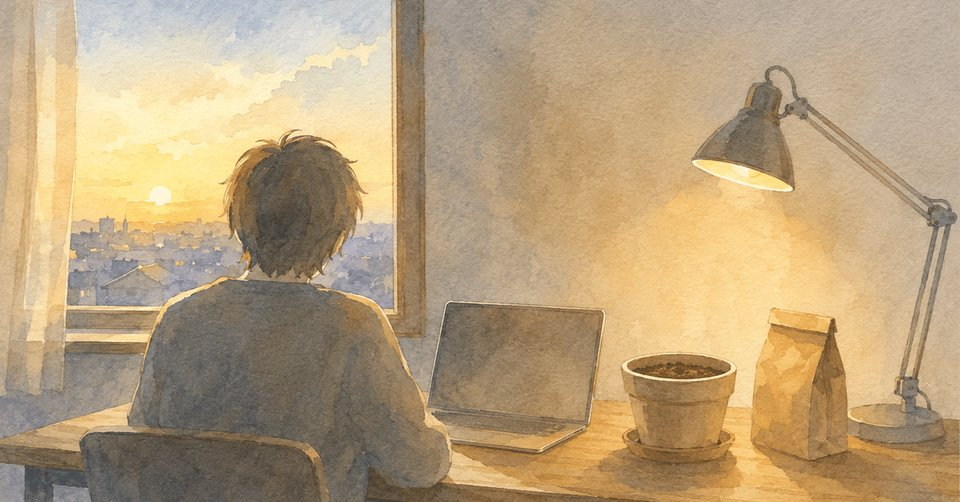
副業の収益が0円のまま2週間。今はタネを撒く時期だと割り切った
植木鉢とタネの袋を配置し、「収益はまだないが、タネを撒いている時期」という記事の結論をそのまま構図にした。
記事を読む »記事本文や、Webライターとしての実績はWebライター向けページで、AI画像生成によるビジュアル制作のご依頼はWebデザイナー向けページでまとめて紹介しています。